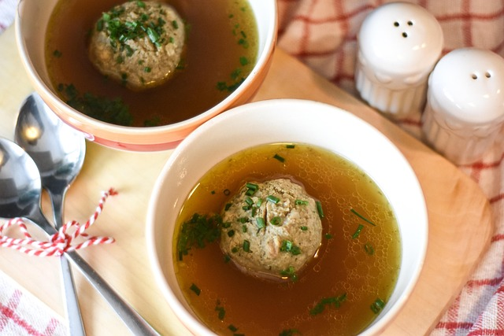

Liver Dumpling Soup

Traditionally a Central European dish, Liver dumpling soup is known for its rich, savory
warmth. In countries like Germany and Austria, it features small dumplings made
finely ground liver(beef for today's purposes), mixed with breadcrumbs, eggs,
onions, parsley, and aromatic spices such as marjoram and nutmeg
In places like Bavaria, liver dumpling soup is beloved often found in inns and family
kitchens. The dumplings are hand-molded and poached to create a satisfying texture
that compliments the smooth broth amazingly. The soup is wrought with richness
and freshness through the chives and parsley garnish. Humble, it may sound, it
shows a long tradition of culinary resourcefulness.
Ingredients
- 1/2 pound of beef liver
- 2 tablespoons of butter
- 1 small onion
- 2 tablespoons of chopped parsley
- 1/4 teaspoon marjoram
- 1/4 teaspoon salt
- fresh ground black pepper
- 1 cup breadcrumbs
- 2 large eggs
- 6 cups well seasoned beef broth
Instructions
- Place the liver, butter, onion, parsley, and seasonings in the bowl of a food
processor, and process until smooth.
- Add the breadcrumbs and eggs and process until well mixed.
- Form the dumplings, adding a bit more breadcrumbs as needed to help hold
them together.
- Bring the broth to a boil. Add the dumplings, reduce the heat, and simmer for
about 20 minutes. The dumplings should be floating when they’re done.
- Serve the soup garnished with fresh parsley.
Home